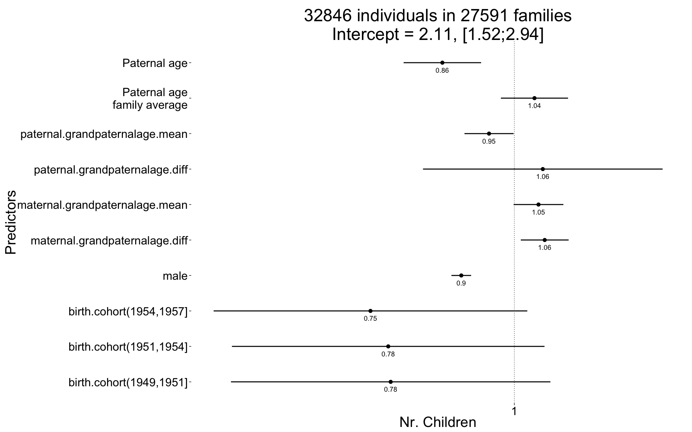
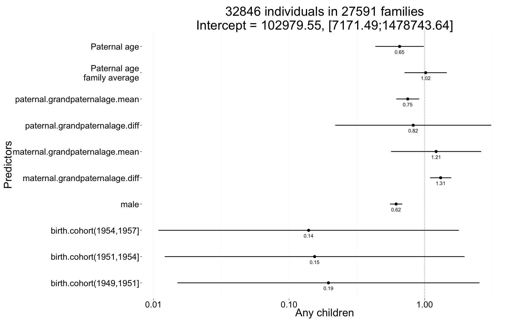

library(data.table); library(ggplot2); library(knitr); library(lme4); library(blme)
opts_chunk$set(warning=TRUE, cache=TRUE,tidy=FALSE,autodep=TRUE,dev=c('png','pdf'),fig.width=20,fig.height=12.5,out.width='1440px',out.height='900px',cache.extra=file.info('swed.rdata')[, 'mtime'])
source("0__helpers.R")
load("swed1.rdata")
swed.1[, maternal.grandpaternalage := (byear.Mother - byear.MaternalGrandfather)/10]
swed.1[, paternal.grandpaternalage := (byear.Father - byear.PaternalGrandfather)/10]
swed.1[,idPaternalGrandparents := paste(idPaternalGrandfather, idPaternalGrandmother)]
swed.1[,idMaternalGrandparents := paste(idMaternalGrandfather, idMaternalGrandmother)]
swed.1 = recenter.pat(swed.1, what = "paternal.grandpaternalage", among_who = "idPaternalGrandparents")
swed.1 = recenter.pat(swed.1, what = "maternal.grandpaternalage", among_who = "idMaternalGrandparents")
missingness_patterns(swed.1[, list(paternalage.diff, maternal.grandpaternalage.diff,paternal.grandpaternalage.diff)])## index col missings
## 1 maternal.grandpaternalage.diff 1350242
## 2 paternal.grandpaternalage.diff 1349844## Pattern Freq Culprit
## 1 12 1349844
## 3 __ 69040 _
## 2 1_ 398 maternal.grandpaternalage.diffnrow(model.frame(children ~ center(spouses)*male + birth.cohort + male + paternalage.mean + paternalage.diff + maternal.grandpaternalage.diff + maternal.grandpaternalage.mean + paternal.grandpaternalage.diff + paternal.grandpaternalage.mean + (idParents) + (idPaternalGrandparents) + (idMaternalGrandparents), data = swed.1))## [1] 68954swed.1 = swed.1[!is.na(paternal.grandpaternalage.diff), ]
rm(swed.2)The swed.1 dataset contains only those participants where paternal age is known and the birthdate is between 1630 and 1750.
All of the following models have the following in common:
Bobyqa is fairly robust to convergence failures. In addition to using Bobyqa, we center some variables that otherwise lead to large eigenvalues.
control_defaults = glmerControl(optimizer = "bobyqa")As in our main models, we control for birth.cohort (birth years in five equally large bins), male sex. Additionally, we control for paternal and maternal loss (whether either parent died within 5 years of the birth), for maternal age (bins of 14-20, 20-35 and 35-50), the number of siblings.
We added random intercepts for each family (father-mother dyad). We then controlled for the average paternal age in the family. Hence, the paternal age effects in the plot are split into those between families and those within families or between siblings. The relevant effect for our hypothesized mechanism, de novo mutations, is paternal age between siblings.
Here, episodes of selection refers to survival, mating success, reproductive success. To steer clear of sacrificial pseudo-replication, we make sure that each effect cannot be explained by the episode of selection preceding it. At its simplest, we check for effect on survival to reproduction only among those who lived to their first birthday. In later models, we look for an effect on number of children only among those who married and control their number of spouses.
Children_all <- bglmer(
children ~ male + birth.cohort + paternalage.mean + paternalage.diff + maternal.grandpaternalage.diff + maternal.grandpaternalage.mean + paternal.grandpaternalage.diff + paternal.grandpaternalage.mean + (1|idParents) + (1|idPaternalGrandparents) + (1|idMaternalGrandparents),
data= swed.1, subset = byear < 1958,
family = 'poisson', control = control_defaults,
fixef.prior = normal() )
summary(Children_all)## Cov prior : idParents ~ wishart(df = 3.5, scale = Inf, posterior.scale = cov, common.scale = TRUE)
## : idPaternalGrandparents ~ wishart(df = 3.5, scale = Inf, posterior.scale = cov, common.scale = TRUE)
## : idMaternalGrandparents ~ wishart(df = 3.5, scale = Inf, posterior.scale = cov, common.scale = TRUE)
## Fixef prior: normal(sd = c(10, 2.5, ...), corr = c(0 ...), common.scale = FALSE)
## Prior dev : 52
##
## Generalized linear mixed model fit by maximum likelihood (Laplace
## Approximation) [bglmerMod]
## Family: poisson ( log )
## Formula:
## children ~ male + birth.cohort + paternalage.mean + paternalage.diff +
## maternal.grandpaternalage.diff + maternal.grandpaternalage.mean +
## paternal.grandpaternalage.diff + paternal.grandpaternalage.mean +
## (1 | idParents) + (1 | idPaternalGrandparents) + (1 | idMaternalGrandparents)
## Data: swed.1
## Control: control_defaults
## Subset: byear < 1958
##
## AIC BIC logLik deviance df.resid
## 114993 115111 -57483 114965 32832
##
## Scaled residuals:
## Min 1Q Median 3Q Max
## -1.742 -0.296 0.177 0.513 3.124
##
## Random effects:
## Groups Name Variance Std.Dev.
## idParents (Intercept) 0.0843 0.290
## idPaternalGrandparents (Intercept) 0.1004 0.317
## idMaternalGrandparents (Intercept) 0.2418 0.492
## Number of obs: 32846, groups:
## idParents, 27591; idPaternalGrandparents, 25921; idMaternalGrandparents, 19884
##
## Fixed effects:
## Estimate Std. Error z value Pr(>|z|)
## (Intercept) 0.7476 0.1694 4.41 0.00001 ***
## male -0.1072 0.0102 -10.56 < 2e-16 ***
## birth.cohort(1949,1951] -0.2498 0.1646 -1.52 0.12921
## birth.cohort(1951,1954] -0.2547 0.1611 -1.58 0.11381
## birth.cohort(1954,1957] -0.2906 0.1616 -1.80 0.07222 .
## paternalage.mean 0.0407 0.0346 1.18 0.23945
## paternalage.diff -0.1454 0.0399 -3.64 0.00027 ***
## maternal.grandpaternalage.diff 0.0614 0.0247 2.49 0.01280 *
## maternal.grandpaternalage.mean 0.0488 0.0256 1.90 0.05693 .
## paternal.grandpaternalage.diff 0.0575 0.1235 0.47 0.64121
## paternal.grandpaternalage.mean -0.0511 0.0253 -2.02 0.04340 *
## ---
## Signif. codes: 0 '***' 0.001 '**' 0.01 '*' 0.05 '.' 0.1 ' ' 1
##
## Correlation of Fixed Effects:
## (Intr) male b.(194 b.(1951 b.(1954 ptrnlg.m ptrnlg.d
## male -0.024
## b.(1949,195 -0.927 -0.003
## b.(1951,195 -0.966 -0.005 0.966
## b.(1954,195 -0.978 -0.006 0.964 0.996
## paternlg.mn 0.319 0.001 -0.037 -0.082 -0.126
## patrnlg.dff 0.280 0.003 -0.024 -0.064 -0.105 0.812
## mtrnl.grndptrnlg.d -0.073 0.002 0.000 0.008 0.015 -0.279 -0.182
## mtrnl.grndptrnlg.m -0.089 -0.003 0.006 0.017 0.024 -0.308 -0.207
## ptrnl.grndptrnlg.d 0.095 -0.007 -0.025 -0.036 -0.049 0.231 0.183
## ptrnl.grndptrnlg.m 0.081 0.003 -0.004 -0.013 -0.021 0.287 0.194
## mtrnl.grndptrnlg.d mtrnl.grndptrnlg.m
## male
## b.(1949,195
## b.(1951,195
## b.(1954,195
## paternlg.mn
## patrnlg.dff
## mtrnl.grndptrnlg.d
## mtrnl.grndptrnlg.m 0.827
## ptrnl.grndptrnlg.d -0.176 -0.181
## ptrnl.grndptrnlg.m -0.886 -0.930
## ptrnl.grndptrnlg.d
## male
## b.(1949,195
## b.(1951,195
## b.(1954,195
## paternlg.mn
## patrnlg.dff
## mtrnl.grndptrnlg.d
## mtrnl.grndptrnlg.m
## ptrnl.grndptrnlg.d
## ptrnl.grndptrnlg.m 0.176Children_all_coefs = fortify_mine(Children_all)
plot_fortified_mer(Children_all_coefs, "Nr. Children")
swed.1$any_children = ifelse(swed.1$children > 0, 1, 0)
Any_children <- bglmer(
any_children ~ birth.cohort + male + paternalage.mean + paternalage.diff + maternal.grandpaternalage.diff + maternal.grandpaternalage.mean + paternal.grandpaternalage.diff + paternal.grandpaternalage.mean + (1|idParents) + (1|idPaternalGrandparents) + (1|idMaternalGrandparents),
data= swed.1, subset = byear < 1958,
family = 'binomial', control = control_defaults,
fixef.prior = normal() )
summary(Any_children)## Cov prior : idParents ~ wishart(df = 3.5, scale = Inf, posterior.scale = cov, common.scale = TRUE)
## : idPaternalGrandparents ~ wishart(df = 3.5, scale = Inf, posterior.scale = cov, common.scale = TRUE)
## : idMaternalGrandparents ~ wishart(df = 3.5, scale = Inf, posterior.scale = cov, common.scale = TRUE)
## Fixef prior: normal(sd = c(10, 2.5, ...), corr = c(0 ...), common.scale = FALSE)
## Prior dev : 42
##
## Generalized linear mixed model fit by maximum likelihood (Laplace
## Approximation) [bglmerMod]
## Family: binomial ( logit )
## Formula:
## any_children ~ birth.cohort + male + paternalage.mean + paternalage.diff +
## maternal.grandpaternalage.diff + maternal.grandpaternalage.mean +
## paternal.grandpaternalage.diff + paternal.grandpaternalage.mean +
## (1 | idParents) + (1 | idPaternalGrandparents) + (1 | idMaternalGrandparents)
## Data: swed.1
## Control: control_defaults
## Subset: byear < 1958
##
## AIC BIC logLik deviance df.resid
## 24552 24669 -12262 24524 32832
##
## Scaled residuals:
## Min 1Q Median 3Q Max
## -2.7451 0.0075 0.0092 0.3373 1.7178
##
## Random effects:
## Groups Name Variance Std.Dev.
## idParents (Intercept) 0.153 0.391
## idPaternalGrandparents (Intercept) 0.248 0.498
## idMaternalGrandparents (Intercept) 309.768 17.600
## Number of obs: 32846, groups:
## idParents, 27591; idPaternalGrandparents, 25921; idMaternalGrandparents, 19884
##
## Fixed effects:
## Estimate Std. Error z value Pr(>|z|)
## (Intercept) 11.5423 1.3594 8.49 <2e-16 ***
## birth.cohort(1949,1951] -1.6349 1.3082 -1.25 0.2114
## birth.cohort(1951,1954] -1.8693 1.2991 -1.44 0.1502
## birth.cohort(1954,1957] -1.9709 1.3017 -1.51 0.1300
## male -0.4854 0.0531 -9.14 <2e-16 ***
## paternalage.mean 0.0163 0.1831 0.09 0.9291
## paternalage.diff -0.4263 0.2097 -2.03 0.0421 *
## maternal.grandpaternalage.diff 0.2703 0.0916 2.95 0.0032 **
## maternal.grandpaternalage.mean 0.1936 0.3905 0.50 0.6200
## paternal.grandpaternalage.diff -0.1950 0.6758 -0.29 0.7729
## paternal.grandpaternalage.mean -0.2884 0.0987 -2.92 0.0035 **
## ---
## Signif. codes: 0 '***' 0.001 '**' 0.01 '*' 0.05 '.' 0.1 ' ' 1
##
## Correlation of Fixed Effects:
## (Intr) b.(194 b.(1951 b.(1954 male ptrnlg.m ptrnlg.d
## b.(1949,195 -0.950
## b.(1951,195 -0.963 0.990
## b.(1954,195 -0.969 0.989 0.998
## male -0.018 -0.005 -0.004 -0.005
## paternlg.mn 0.214 -0.028 -0.057 -0.088 0.009
## patrnlg.dff 0.182 -0.019 -0.042 -0.071 0.015 0.794
## mtrnl.grndptrnlg.d -0.023 -0.005 -0.001 0.001 -0.007 -0.165 -0.063
## mtrnl.grndptrnlg.m -0.021 0.000 0.001 0.002 -0.003 -0.047 -0.022
## ptrnl.grndptrnlg.d 0.052 -0.020 -0.024 -0.031 0.005 0.165 0.133
## ptrnl.grndptrnlg.m 0.022 0.003 0.000 -0.003 0.013 0.140 0.055
## mtrnl.grndptrnlg.d mtrnl.grndptrnlg.m
## b.(1949,195
## b.(1951,195
## b.(1954,195
## male
## paternlg.mn
## patrnlg.dff
## mtrnl.grndptrnlg.d
## mtrnl.grndptrnlg.m 0.218
## ptrnl.grndptrnlg.d -0.135 -0.033
## ptrnl.grndptrnlg.m -0.915 -0.237
## ptrnl.grndptrnlg.d
## b.(1949,195
## b.(1951,195
## b.(1954,195
## male
## paternlg.mn
## patrnlg.dff
## mtrnl.grndptrnlg.d
## mtrnl.grndptrnlg.m
## ptrnl.grndptrnlg.d
## ptrnl.grndptrnlg.m 0.117Any_children_coefs = fortify_mine(Any_children)
plot_fortified_mer(Any_children_coefs, "Any children")
name = "swed_grandparents"
save(list = lstype('confint.merMod'),file=paste0("coefs/",name,"_coefs.rdata"))
save(list = lstype(),file=paste0("coefs/",name,"_models.rdata"))sessionInfo()## R version 3.1.3 (2015-03-09)
## Platform: x86_64-apple-darwin13.4.0 (64-bit)
## Running under: OS X 10.10.2 (Yosemite)
##
## locale:
## [1] en_US.UTF-8/en_US.UTF-8/en_US.UTF-8/C/en_US.UTF-8/en_US.UTF-8
##
## attached base packages:
## [1] grid graphics grDevices utils datasets stats methods
## [8] base
##
## other attached packages:
## [1] Hmisc_3.15-0 Formula_1.2-0 survival_2.38-1 lattice_0.20-30
## [5] QuantPsyc_1.5 MASS_7.3-39 boot_1.3-15 blme_1.0-2
## [9] lme4_1.1-7 Rcpp_0.11.5 Matrix_1.1-5 stringi_0.4-1
## [13] dplyr_0.4.1 pander_0.5.2 knitr_1.9 rmarkdown_0.5.1
## [17] plyr_1.8.1 ggplot2_1.0.0 formr_0.1.11 data.table_1.9.5
## [21] stringr_0.6.2 devtools_1.7.0
##
## loaded via a namespace (and not attached):
## [1] acepack_1.3-3.3 assertthat_0.1 car_2.0-25
## [4] chron_2.3-45 cluster_2.0.1 codetools_0.2-10
## [7] colorspace_1.2-5 DBI_0.3.1 digest_0.6.8
## [10] evaluate_0.5.5 foreign_0.8-63 formatR_1.0
## [13] formula.tools_1.3.4 gtable_0.1.2 htmltools_0.2.6
## [16] latticeExtra_0.6-26 magrittr_1.5 mgcv_1.8-4
## [19] minqa_1.2.4 munsell_0.4.2 nlme_3.1-120
## [22] nloptr_1.0.4 nnet_7.3-9 operator.tools_1.3.0
## [25] parallel_3.1.3 pbkrtest_0.4-2 proto_0.3-10
## [28] quantreg_5.11 RColorBrewer_1.1-2 reshape2_1.4.1
## [31] rpart_4.1-9 scales_0.2.4 SparseM_1.6
## [34] splines_3.1.3 tcltk_3.1.3 tools_3.1.3date()## [1] "Fri Apr 3 19:42:39 2015"